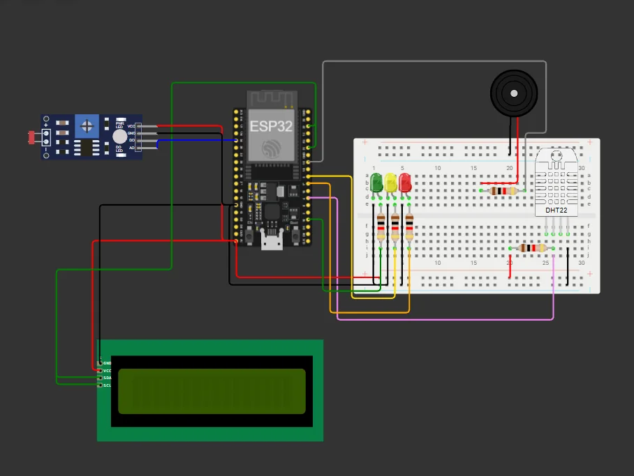
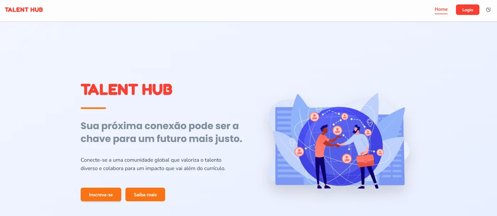

Sistema IoT de monitoramento ambiental
Acompanha as condições do ambiente com um ESP32 e sensores e aciona alertas automáticos por LEDs e buzzer conforme as medições. Também permite controle manual via MQTT.
Ver código no GitHubEstudante de Engenharia de Software. Desenvolvo aplicações web e sistemas de monitoramento com IoT, e procuro minha primeira oportunidade na área.
Estudo Engenharia de Software na FIAP Paulista e estou no 4º semestre. Ao longo do curso trabalhei com Java, HTML, CSS, React, Git e GitHub e Edge Computing, e tive um primeiro contato com design 3D.
Um dos projetos de que mais gostei foi o monitoramento ambiental de uma vinheria inteligente: um ESP32 com sensores, alertas automáticos em tempo real e controle via MQTT. Aprendo na prática, testando e entendendo cada parte do processo antes de seguir para o próximo desafio.
Ainda não tenho experiência profissional na área. Busco minha primeira oportunidade para atuar em projetos reais, aprender com desenvolvedores mais experientes e contribuir com a equipe.

Acompanha as condições do ambiente com um ESP32 e sensores e aciona alertas automáticos por LEDs e buzzer conforme as medições. Também permite controle manual via MQTT.
Ver código no GitHubProjeto da Global Solution: um sistema de monitoramento e triagem de riscos aplicado a dois cenários brasileiros reais. Combina grafos ponderados, árvores binárias de busca, força bruta e algoritmos gulosos (Dijkstra e Prim).
Ver código no GitHub
Plataforma web que conecta profissionais e empresas. Os profissionais criam perfis com habilidades, experiências e portfólio, e as empresas buscam e filtram talentos para as vagas abertas, tudo em um só lugar.
Ver código no GitHubEstou aberto a oportunidades, projetos e conversas sobre tecnologia. O e-mail é o caminho mais rápido.
wildeisenmatheus@gmail.com